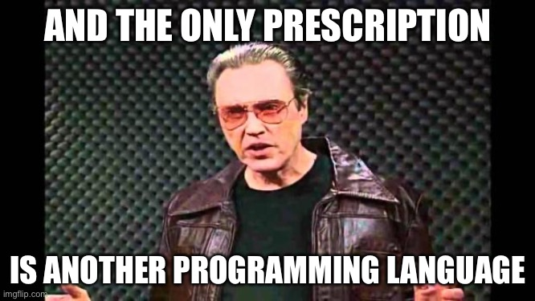
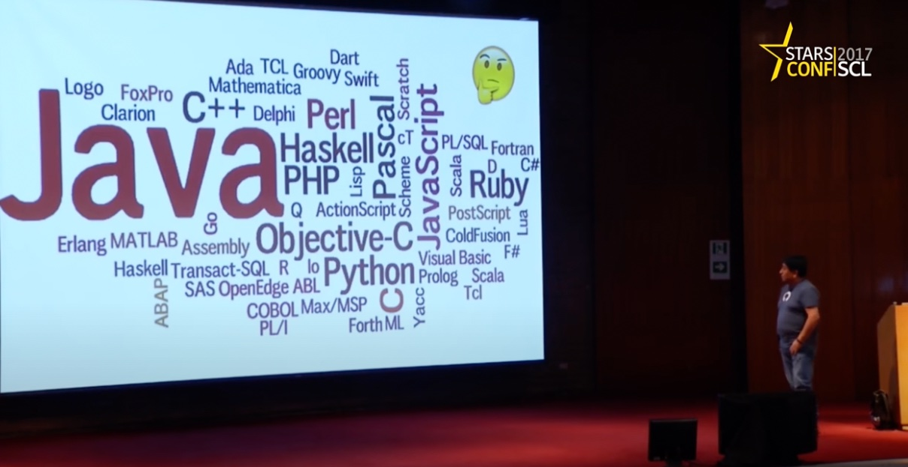
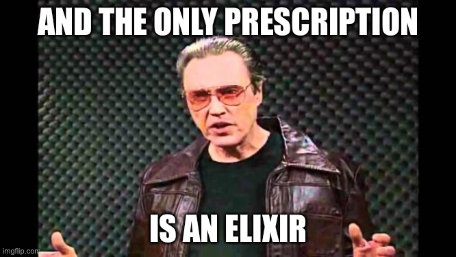
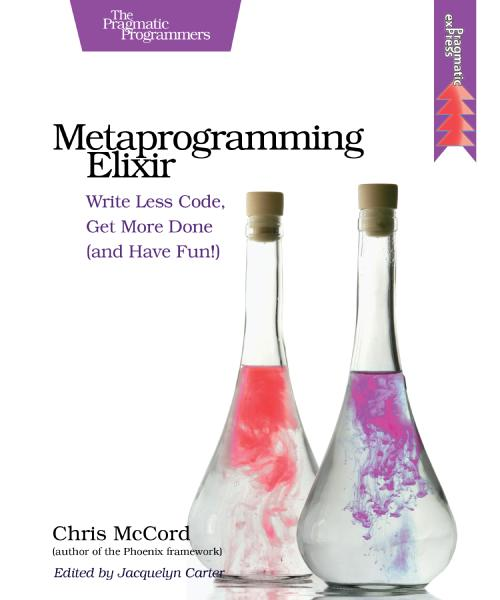
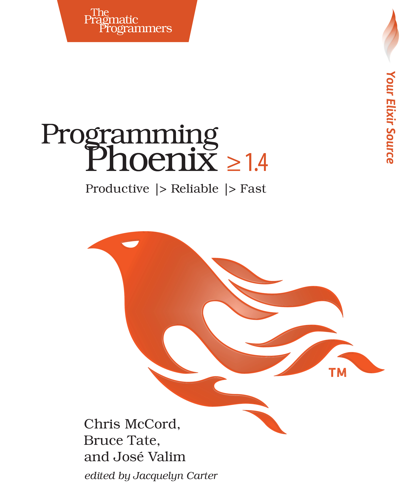

<!DOCTYPE html>
<html lang="en">
  <head>
    <meta charset="utf-8" />
    <meta name="viewport" content="width=device-width, initial-scale=1.0, maximum-scale=1.0, user-scalable=no" />

    <title></title>
    <link rel="stylesheet" href="dist/reveal.css" />
    <link rel="stylesheet" href="dist/theme/black.css" id="theme" />
    <link rel="stylesheet" href="plugin/highlight/zenburn.css" />
	<link rel="stylesheet" href="css/layout.css" />
	<link rel="stylesheet" href="plugin/customcontrols/style.css">


    <script defer src="dist/fontawesome/all.min.js"></script>

	<script type="text/javascript">
		var forgetPop = true;
		function onPopState(event) {
			if(forgetPop){
				forgetPop = false;
			} else {
				parent.postMessage(event.target.location.href, "app://obsidian.md");
			}
        }
		window.onpopstate = onPopState;
		window.onmessage = event => {
			if(event.data == "reload"){
				window.document.location.reload();
			}
			forgetPop = true;
		}

		function fitElements(){
			const itemsToFit = document.getElementsByClassName('fitText');
			for (const item in itemsToFit) {
				if (Object.hasOwnProperty.call(itemsToFit, item)) {
					var element = itemsToFit[item];
					fitElement(element,1, 1000);
					element.classList.remove('fitText');
				}
			}
		}

		function fitElement(element, start, end){

			const size = (end + start) / 2;
			element.style.fontSize = `${size}px`;

			if(Math.abs(start - end) < 1){
				return;
			}

			if(element.scrollHeight > element.offsetHeight){
				fitElement(element, start, size);
			} else {
				fitElement(element, size, end);
			}		
		}


		document.onreadystatechange = () => {
			fitElements();
			if (document.readyState === 'complete') {
				if (window.location.href.indexOf("?export") != -1){
					parent.postMessage(event.target.location.href, "app://obsidian.md");
				}
				if (window.location.href.indexOf("print-pdf") != -1){
					let stateCheck = setInterval(() => {
						clearInterval(stateCheck);
						window.print();
					}, 250);
				}
			}
	};


        </script>
  </head>
  <body>
    <div class="reveal">
      <div class="slides"><section ><section data-markdown><script type="text/template"># Hola
</script></section><section data-markdown><script type="text/template">

<div class="reset-margin" style="position: absolute; left: 0px; top: 0px; height: 700px; min-height: 700px; width: 480px; display: flex; flex-direction: column; align-items: center; justify-content: space-evenly" >

<p style="line-height: 0" class="reset-paragraph"></img></p>

</div>

<div class="reset-margin" style="position: absolute; left: 480px; top: 0px; height: 700px; min-height: 700px; width: 480px; display: flex; flex-direction: column; align-items: center; justify-content: space-evenly" >
 
Eduardo Díaz
<br>

Software Architect / Cornershop by Uber

<br>

@LNDS

<br>

https://lnds.net/
</div>

<!-- .slide: class="drop" -->
</script></section></section><section  data-markdown><script type="text/template">
```elixir
Elixires 
    |> Brebajes 
    |> Mamajuanas
```
</script></section><section  data-markdown><script type="text/template"><p style="line-height: 0" class="reset-paragraph"></img></p>


https://lnds.net/blog/lnds/2016/01/09/esos-raros-lenguajes-nuevos/</script></section><section  data-markdown><script type="text/template">
<p style="line-height: 0" class="reset-paragraph"></img></p>

</script></section><section  data-markdown><script type="text/template">
<p style="line-height: 0" class="reset-paragraph"></img></p>


https://www.youtube.com/watch?v=Hp9HwLPYkjI</script></section><section  data-markdown><script type="text/template">
<p style="line-height: 0" class="reset-paragraph"></img></p>

</script></section><section  data-markdown><script type="text/template"><p style="line-height: 0" class="reset-paragraph"></img></p>

</script></section><section  data-markdown><script type="text/template"><p style="line-height: 0" class="reset-paragraph"></img></p>

</script></section><section  data-markdown><script type="text/template">
<p style="line-height: 0" class="reset-paragraph"></img></p>

</script></section><section  data-markdown><script type="text/template">
<p style="line-height: 0" class="reset-paragraph"></img></p>

</script></section><section ><section data-markdown><script type="text/template"># GRACIAS</script></section><section data-markdown><script type="text/template">
# Elixires
<p style="line-height: 0" class="reset-paragraph"></img></p>

</script></section></section><section  data-markdown><script type="text/template">
elixir
Tb. elíxir.

Del lat. mediev. elixir, este del ár. clás. al'iksīr, y este del gr. bizant. ξήριον xḗrion 'polvos desecativos de heridas'.
1. m. piedra filosofal (‖ materia alquímica para hacer oro).

2. m. Licor compuesto de diferentes sustancias medicinales, disueltas por lo regular en alcohol.

3. m. Medicamento o remedio maravilloso.

4. m. Alq. Sustancia esencial de un cuerpo.
</script></section><section  data-markdown><script type="text/template">
El poder del operador |>
</script></section><section  data-markdown><script type="text/template">
```elixir
def catalog_loader(data) do
  data 
   |> validator(rules) 
   |> enricher(properties) 
   |> loader(db) 
   |> reporter(storage)
end
```
</script></section><section  data-markdown><script type="text/template">
```elixir
defmodule User do

  defstruct name: nil, year_of_birth: nil


  def create(params) do
    %User{}
    |> parse_yob(params["yob"])
    |> parse_name(params["name"])
  end

  defp parse_yob(user, yob) do
    %{user | year_of_birth: yob}
  end 
  
  defp parse_name(user, name) do    
    %{user | name: name}
  end

end
```</script></section><section ><section data-markdown><script type="text/template">
```elixir
defmodule User do

  defstruct name: nil, year_of_birth: 0


  def create(params) do
    %User{}
    |> parse_yob(params["yob"])
    |> parse_name(params["name"])
  end

  defp parse_yob(_user, nil), do: {:error, "yob is required"}
  defp parse_yob(user, year) when is_integer(year), do: %{user | year_of_birth: year}
  defp parse_yob(_user, _invalid_year), do: {:error, "year must be integer"}
  
  defp parse_name(_user, {:error, _} = err), do: err
  defp parse_name(_user, nil), do: {:error, "name is required"}
  defp parse_name(user, ""), do: parse_name(user, nil)
  defp parse_name(user, name), do: %{user | name: name}

end
```
</script></section><section data-markdown><script type="text/template">
# Brebajes
<p style="line-height: 0" class="reset-paragraph"></img></p>

</script></section></section><section  data-markdown><script type="text/template">
brebaje

Del fr. _breuvage._

1. m. Bebida, y en especial la compuesta 
de ingredientes desagradables al paladar.
2. m. En los buques, vino, cerveza o sidra 
que bebían los marineros.
</script></section><section  data-markdown><script type="text/template">
 `with` macro
</script></section><section ><section data-markdown><script type="text/template">```elixir
defmodule User do

  defstruct name: nil, year_of_birth: 0


  def create(params) do
    with {:ok, yob} <- parse_yob(params["yob"]),
         {:ok, name} <- parse_name(params["name"])
    do
       %User{name: name, year_of_birth: yob}
    else
      err -> err
    end
  end

  defp parse_yob(nil), do: {:error, "yob is required"}
  defp parse_yob(year) when is_integer(year), do: {:ok, year}
  defp parse_yob(_invalid_year), do: {:error, "year must be integer"}
  

  defp parse_name(nil), do: {:error, "name is required"}
  defp parse_name(""), do: parse_name(nil)
  defp parse_name(name), do: {:ok, name}

end
```
</script></section><section data-markdown><script type="text/template">
# Mamajuanas
<p style="line-height: 0" class="reset-paragraph"></img></p>

</script></section></section><section  data-markdown><script type="text/template">
La **mamajuana** es una bebida alcohólica tradicional dominicana especiada con canela, hojas medicinales e hierbas, entre otras cosas. 

Es una bebida dulce aunque ardiente que te dejará sin aliento, y quizás un poco "juguetón". 

Se le atribuyen muchos beneficios: desde medicinales, hasta afrodisíacos.
</script></section><section  data-markdown><script type="text/template">
```elixir
desfstruct [:name, :email, :age]

user = %User{}

user
|> cast(params, [:name, :email, :age])
|> required([:name, :email])
|> check_format(:email, ~r/@/)
|> check_range(:age, 18..100)
|> is_unique(:email)
```
</script></section><section  data-markdown><script type="text/template">
## The token pattern
</script></section><section  data-markdown><script type="text/template">
```elixir
defmodule MyLib.Token do
  defstruct Token data: nil,
                rules: nil,
                properties: nil
                format: nil, 
                halted: nil,
                errors: nil
end
```
</script></section><section  data-markdown><script type="text/template">
```elixir
defmodule MyProgram do

   alias MyLib.Token

   def run(data) do
      %Token{data: data}
      |> validate(rules)
      |> enrich(properties)
      |> load(format)
      |> report()
    end
```
</script></section><section  data-markdown><script type="text/template">
```elixir
defp validate(token, rules) do
   # do something with rules
   errors = biz_rules(token.data, rules)
   %Token{token | errors: errors, halted: Enum.any?(errors)}
end
```

</script></section><section  data-markdown><script type="text/template">
```elixir
defp enrich(%Token{halt: true} = token, _), do: token

defp enrich(token, properties) do
   {enriched_data, errors} = enrich_data(token.data, rules)
   ...
   %Token{token | data: enriched_data, errors: errors, halted: Enum.any?(errors)}    
end

defp load(%Token{halt: true}=token, _), do: token

...

```

🤯
</script></section><section  data-markdown><script type="text/template">
## Aplicaciones
</script></section><section  data-markdown><script type="text/template">### Ecto.Changesets

```elixir
import Ecto.Changeset

user = %User{}

user
|> cast(params, [:name, :email, :age])
|> validate_required([:name, :email])
|> validate_format(:email, ~r/@/)
|> validate_inclusion(:age, 18..100)
|> unique_constraint(:email)
```
</script></section><section  data-markdown><script type="text/template">
### Plug

```elixir
defmodule JSONHeaderPlug do
  import Plug.Conn

  def init(opts) do
    opts
  end

  def call(conn, _opts) do
    put_resp_content_type(conn, "application/json")
  end
end
```
</script></section><section  data-markdown><script type="text/template">
### Plug Behavior

```elixir
def my_plug(conn, opts) do
   con
end

module MyPlug do
  def init(opts) do
    opts
  end

  def call(conn, opts) do
    conn
  end
end
```
</script></section><section  data-markdown><script type="text/template">
```elixir
defmodule AppRouter do
  use Plug.Router

  plug :match
  plug :dispatch

  get "/hello" do
    send_resp(conn, 200, "world")
  end

  match _ do
    send_resp(conn, 404, "oops")
  end
end
```
</script></section><section  data-markdown><script type="text/template">```elixir
pipeline :browser do
   plug :accepts, ["html"]
   plug :fetch_session
   plug :fetch_flash
   plug :protect_from_forgery
   plug :put_secure_browser_headers
   plug :fetch_current_user
 end
```</script></section><section  data-markdown><script type="text/template">
<p style="line-height: 0" class="reset-paragraph"></img></p>

</script></section><section  data-markdown><script type="text/template">
<p style="line-height: 0" class="reset-paragraph"></img></p>

</script></section><section ><section data-markdown><script type="text/template">
<p style="line-height: 0" class="reset-paragraph"></img></p>

</script></section><section data-markdown><script type="text/template">
# Gracias

🙏

(ahora sí)</script></section></section><section  data-markdown><script type="text/template">
</script></section></div>
    </div>

    <script src="dist/reveal.js"></script>

    <script src="plugin/markdown/markdown.js"></script>
    <script src="plugin/highlight/highlight.js"></script>
    <script src="plugin/zoom/zoom.js"></script>
    <script src="plugin/notes/notes.js"></script>
    <script src="plugin/math/math.js"></script>
	<script src="plugin/mermaid/mermaid.js"></script>
	<script src="plugin/customcontrols/plugin.js"></script>

    <script>
      function extend() {
        var target = {};
        for (var i = 0; i < arguments.length; i++) {
          var source = arguments[i];
          for (var key in source) {
            if (source.hasOwnProperty(key)) {
              target[key] = source[key];
            }
          }
        }
        return target;
      }

      // default options to init reveal.js
      var defaultOptions = {
        controls: true,
        progress: true,
        history: true,
        center: true,
        transition: 'default', // none/fade/slide/convex/concave/zoom
        plugins: [
          RevealMarkdown,
          RevealHighlight,
          RevealZoom,
          RevealNotes,
          RevealMath.MathJax3,
		  RevealMermaid,
		  RevealCustomControls,
        ],

		mathjax3: {
			mathjax: 'plugin/math/mathjax/tex-mml-chtml.js',
		},

		customcontrols: {
			controls: [
			]
		},
      };

      // options from URL query string
      var queryOptions = Reveal().getQueryHash() || {};

      var options = extend(defaultOptions, {"width":960,"height":700,"margin":0.04,"controls":true,"progress":true,"slideNumber":true,"transition":"slide","transitionSpeed":"default"}, queryOptions);
    </script>

    <script>
      Reveal.initialize(options);
    </script>
  </body>
</html>
